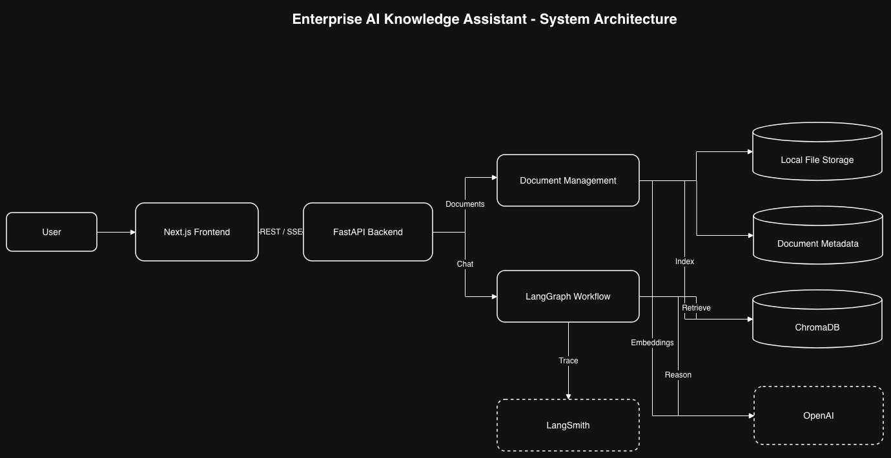
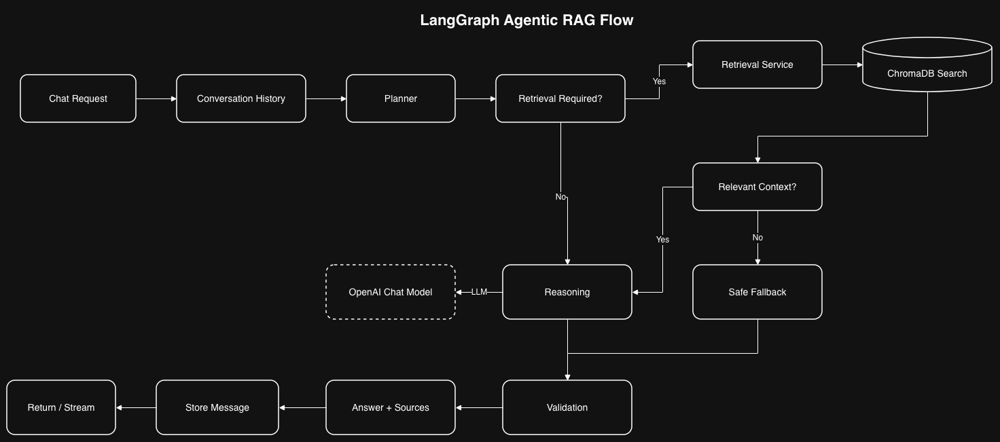
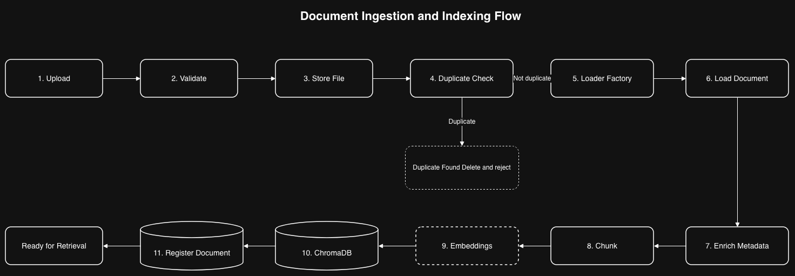
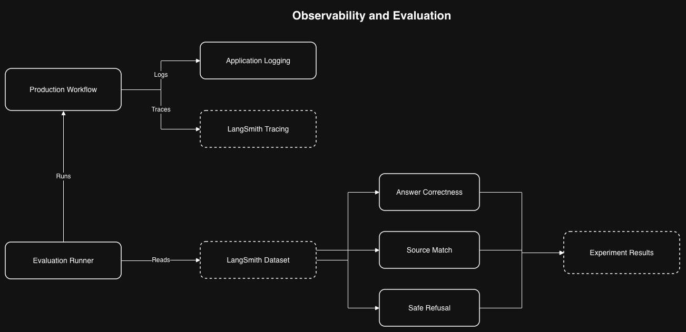
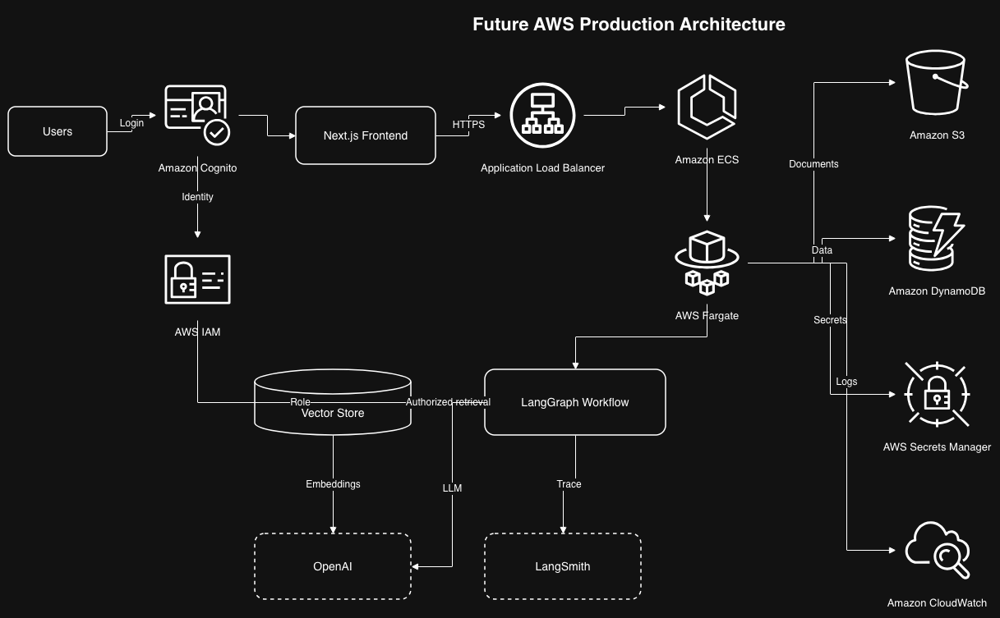

Multi-format ingestion
Upload PDF, TXT, CSV and XLSX documents through a validated indexing pipeline.
A full-stack AI system that turns enterprise documents into a grounded, conversational knowledge experience using RAG, LangGraph orchestration, guardrails, source attribution, streaming responses, evaluation, and observability.
The system handles the complete lifecycle from document ingestion to grounded answering, including duplicate detection, vector indexing, conditional agent routing, safe no-context behavior, conversation memory, source attribution and production-style observability.
Upload PDF, TXT, CSV and XLSX documents through a validated indexing pipeline.
LangGraph coordinates planning, retrieval, reasoning, fallback handling and validation.
ChromaDB semantic search and relevance thresholds reduce unrelated context reaching the LLM.
When reliable context is missing, the workflow skips LLM reasoning and returns a safe fallback.
Request IDs, node timings, retrieval scores, structured logs and LangSmith traces improve debugging.
Repeatable LangSmith experiments measure answer correctness, source match and unanswerable behavior.
The application separates frontend, API, document processing, AI orchestration, vector search and model integration so local components can later be replaced with managed services.

Next.js 16, React 19 and TypeScript provide the frontend experience with REST and SSE integration.
FastAPI handles document APIs, health endpoints, dependencies, validation and streaming responses.
LangGraph expresses conditional routing and shared graph state across the agentic workflow.
OpenAI embeddings and ChromaDB provide semantic retrieval over indexed enterprise documents.
Each request moves through explicit decision points. Retrieval is conditional, weak context is filtered, and the no-context path prevents unsupported answers.
Classify intent, choose a retrieval strategy, set top-k and decide whether retrieval is required.
Search ChromaDB, score candidates and retain only chunks that pass the configured relevance threshold.
If relevant evidence is unavailable, skip generation and return a deterministic safe response.
Build a prompt from the question, retrieved documents and prior turns, then invoke the configured model.
Attach supporting sources and workflow metadata before returning the final response.

A structured ingestion pipeline validates, stores, deduplicates, loads, chunks, embeds and indexes every supported document.

The project measures behavior through repeatable evaluation datasets and traces workflow execution so retrieval, prompting and model changes can be inspected rather than guessed.
An LLM judge compares generated responses with reference answers.
Evaluation checks whether expected documents appear in returned source attribution.
Guardrail tests confirm that unsupported questions fall back safely instead of hallucinating.
LangSmith and application logging expose node execution, request IDs, latency and retrieval scores.

The current implementation keeps infrastructure local for development while preserving boundaries that make managed cloud replacements straightforward.
Containerize and deploy frontend/backend with ECS or EKS, load balancing, monitoring and CI/CD.
Move documents to Amazon S3 and application/session metadata to DynamoDB.
Resolve users and roles at login and enforce document-level authorization in retrieval.
Manage API keys with AWS Secrets Manager and add centralized telemetry, scaling and resilience.

This walkthrough demonstrates the end-to-end experience: uploading enterprise documents, asking grounded questions, streaming the response, and reviewing supporting sources.

Save your recording as
docs/Screenshots/project_demo.gif
and it will automatically appear in this section.
Review the source code, architecture, tests, API design and AI workflow in the GitHub repository.